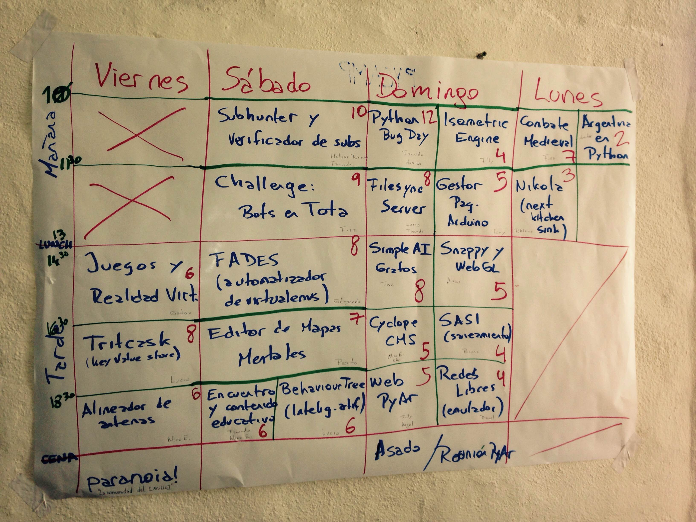

usamos este pad para pasarnos cosas: https://pad.codigosur.org/kivy_notes
pip-cache
Tenemos un pip-cache funcionando en el host alarm. ¡¡Por favor utilizarlo!!
Hay dos maneras de usarlo, la más simple (pero tenes que acordarte el comando)
La otra es editar ~/.pip/pip.conf y dejar la config fija:
Cronograma de actividades 2015:
{kind=link}
Juegos, Realidad Virtual y otras cosas
El objetivo de esta actividad es tratar de armar algo utilizando Oculus, LeapMotion, Kinect, Controles y patineta de Xbox, y cualquier cosa que pinte combinar para la idea que se decida realizar junto a los interesados despues de algun brainstorming el primer dia. Obviamente por los dispositivos a usar, el objetivo esta orientado a tratar de crear algun juego o alguna experiencia particular. DISCLAIMER: No se va a usar Python, sino C# utilizando el Engine de Unity3D. (Propone actividad: Gatox)
Tomador de notas grafico
En general cuando tomo notas de algo (mayormente diseñando arquitecturas o planeando roadmaps de features) tiendo a hacer grafos muy parecidos a mind maps, mi idea es hacer un editor que me deje crear nodos, lineas, flechas y todo tipo de dato que se pueda encodear en graficos con las menos palabras posibles. Voy a estar usando algun toolkit graficoso porque no quiero widgets standard sino algo que este mas cerca de una hoja de papel y una lapicera pero practico para el teclado. (Propone actividad: Perrito)
Redes Libres
Simulador de redes mesh con protocolo BATMAN Adv.
https://github.com/dbritos/Network-mesh-emulator
Conocer y si es posible, colaborar con el proyecto de redes libres comunitarias. (Propone actividad: Javier -> emperna a Nico Echaniz)
Tritcask
Un key value store 100% python. Hay que hacerlo pip instalable, portar a python 3, hacer alguna doc, etcs...
https://github.com/verterok/tritcask
(propone: lucio)
SASI
SASI es sigla de Sistema Autogestivo de Saneamiento Integral.
Surge de un proyecto del que participo hace algún tiempo en conjunto con la Facultad de Ciencias Bioquimicas y Farmacéuticas de la Universidad Nacional de Rosario que consiste en hacer un relevamiento del acceso al agua potable en una villa de Rosario, Villa Banana [1].
La idea de hacer un sistema que permita gestionar las encuestas y las distintas actividades en el barrio y que además tenga la posibilidad de comunicarse con la gente del barrio, que en muchos casos no tiene posibilidades de hacerlo de forma directa. Con respecto a esto último una de las alternativas es un sistema que reciba smss mediante un modem gsm en un raspberry y los reporte al servidor. Esta parte está mas o menos avanzada.
Para los formularios de las encuestas podria utilizarse Open Data Kit [2]
Aparte de esto está la complicación de que el barrio no está mapeado, con lo cual también se estan haciendo actividades sobre mapeo comunitario y está la idea de georreferenciar las encuestas, ubicar centros de interés e ir incorporando todas las utilidades que tiene un GIS.
Aparte de esto me parece que es un proyecto que puede tener varias funcionalidades generales para cierto tipo de proyecto que requiera actividades en campo, encuestas y GIS. Se me ocurre que puede ser algo similar a Ushahidi [3], pero con otro objetivo, aunque con una dinámica similar.
[1] http://www.riepibito.com.ar
(propone: Bruno Geninatti)
SubHunter
App (cli y deskstop) para bajar subtitulos[0].Buscar en varios servers (wrappers), bajar uno de cada server para tener más de una opción.
Python 3.4, asyncio, UI no definida.
Usable en Touchandgo[1] (si touchandgo-devs quiere)
Aprendiz friendly
[0] https://github.com/matibarriento/subHunter
[1] https://github.com/touchandgo-devs/touchandgo
(propone: Matías Barriento)
Verificador de subtítulos
(empalmado con Sub Hunter ↑) La idea es verificar si un subtítulo matchea con el video... o mejor dicho, con el audio ;) Lo básico es encontrar si en el momento del subtítulo hay alguien hablando, con eso uno ya se asegura que el subtítulo está sincronizado... [Propone: Facundo Batista]
Encuentro
Fixear algún bug o meter algún feature en Encuentro, que es un simple programa que permite buscar, descargar y ver contenido del canal Encuentro, Paka Paka, BACUA, Educ.ar y otros. [Propone: Facundo Batista]
fades
Fixear algún bug o meter algún feature en fades (fades, "FAst DEpendencies for Scripts", is a system that automatically handles the virtualenvs in the simple cases normally found when writing scripts or simple programs). [Propone: Facundo Batista]
PyArWeb
Una manito para cerrar algunos de los 50~ issues que tenemos? en PyArWeb. La idea tambien es sumar personas via IRC así que estaría bueno hacerlo el Sábado o el Domingo [Propone: Ángel Velásquez]
Python Bug day
La idea es trabajar un rato en Python en sí, cerrar algún bug del lenguaje propiamente dicho. Mucho código del lenguaje es en C, pero también hay mucho en Python mismo, y hay algunas cosas que son sencillas. [Propone: Facundo Batista]
Cyclope CMS
Cyclope ya es un proyecto con varios años de historia. Las primeras ideas las debatimos en un PyCamp. Es un CMS pensado para programadores que no quieren sufrir; y para pythonistas que no quieren switchear a Drupal cuando necesitan un CMS. La idea principal es que los usuarios y adminsitradores de contenido puedan hacer su tarea fácilmente pero que las implementaciones de tipos de contenido, vistas, aplicaciones, las hacemos en código y no con una interfaz web. Cyclope es usado por más de 100 organizaciones sociales latinoamericanas. Hemos participado de su desarrollo varias personas de PyAr y ahora ha vuelto a mi "cuidado". Me gustaría, si hay quienes quieran darme una mano, ver qué implicaría aggiornar Cyclope para que corra con la última versión de Django y de las decenas de apps que usamos. Hay muchas más cosas para hacer, pero esa es una fundamental y especialmente aburrida! que se puede hacer más leve en manada y pingpong de por medio :) La propuesta sería sentarnos unas horas entre quienes quieran ayudar y ver qué implicaría el cambio, no necesariamente implementarlo, pero sí hacernos una idea clara de cuál sería el trabajo. [Propone: NicoEchániz]
Alineador de antenas para Android
Cuando tengo que alinear una antena uso este oneliner:
nodo=oncelotes-bbone; target=C0:4A:00:FC:3A:89; iface=wlan1-adhoc; while true; do signal=`ssh -4 $nodo "iwinfo $iface a | grep $target" | awk '{print $2}' | cut -c 2-`; pico2wave -w 1.wav -l es-ES "$signal"; echo $signal | figlet -f doh; paplay 1.wav;sleep 1; done
que me va tirando cada 1 seg el nivel de señal en un font grande rendereado en ascii art (por figlet) y leído "en voz alta" (por pico TTS). Esto es muy útil, pero para que la gente se encargue de alinear sus propias antenas es un poco nerdoso :)
Entonces... si alguien tiene experiencia con Kivy o se suma a que exploremos junt@s, quería explorar la posibilidad de hacer una mini aplicación para Android que cualquiera pueda usar para alinear su antena, con una lectura en texto grande + audio. La idea es hacer algo útil para las redes comunitarias y de paso aprender un poco de Kivy, que nunca usé pero me llama la atención.
Pensé que puede servir de base revisar esto: https://github.com/brousch/kivy-texttospeech-demo Android trae pico TTS instalado.
Los nodos ya entregan por http un json con la data necesaria. Por ej: http://oncelotes-bbone/cgi-bin/luci/status/json/stations/wlan1-adhoc
devuelve:
[ { "type": "wifi", "station_hostname": "czuk-bbone_wlan1-adhoc", "station": "C0:4A:00:FC:3A:89", "attributes": { "inactive": 0, "channel": 36, "signal": -80 } }, { "type": "wifi", "station_hostname": "giordano-bbone_wlan1-adhoc", "station": "C0:4A:00:FC:38:E1", "attributes": { "inactive": 0, "channel": 36, "signal": -75 } } ]
La idea entonces sería consumir esto desde la mini app.
[Propone: NicoEchániz]
File Sync Service
Tomar el servidor de FileSync de UbuntuOne https://launchpad.net/filesync-server , y hacerlo instalable en instancias personales. [Propone: Lucio Torre]
Mejorar/arreglar el visor de grafos de SimpleAI
SimpleAI es una biblioteca de algoritmos de IA, y para lo que es búsqueda tiene un lindo debugger gráfico que permite visualizar el grafo/árbol de búsqueda en tiempo real. Usa pydot+graphviz, y en las últimas versiones se rompió y dejó de andar. La idea es reemplazarlo por algo mejor, que dibuje el grafo desde el navegador.
Propone actividad: Fisa
SimpleAI:
Challenge!: Tota
Una competencia de programar bots para un juego similar a dota, pero en consola, releaseado exclusívamente para PyCamp (?).
Propone actividad: Fisa
Tota Visualizer
Gatox, alecu y manuq hicieron un visualizador para la competencia Tota con el engine Unity.
Actividad al aire libre: combate medieval
Traje una espada (longsword), y algunas cosas básicas para el que le interese aprender :)
Propone actividad: Fisa